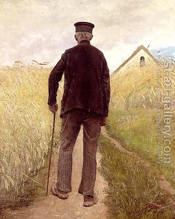

Bava Metzia 30 - When One is not Required to Return a Lost Object
In the verse " You shall not see the ox of your brother or his sheep wandering and hide from them, rather, you shall return them to your brother " the words "...and hide from them..." can be understood to mean that sometimes you do hide from them. For example, an elderly person is not required to pick up an object that is beneath his dignity.
Concerning the areas in which Moses should instruct the Jews, the words "... that they shall do ..." refer to maintaining a standard of conduct that goes beyond the letter of the law. Said Rabbi Yochanan: "Jerusalem was destroyed only because Jews didn't go beyond the letter of the law."
Test your knowledge of the daf